12 ggthemr
参考： https://github.com/cttobin/ggthemr
# devtools::install_github('cttobin/ggthemr')
library(ggthemr)
library(patchwork)
library(gapminder)ggthemr 中主题的调用方式：
运行后，再创建 ggplot 对象，其主题样式将变为 name_of_theme 所指定的那样，包括：
- 各种调色板
- 坐标轴、网格线的布局
- 元素之间的间距
- 字体大小
ggthemr 背后的运行机制：
ggplot2::theme_set()设置默认主题
ggplot2::update_geom_defaults()修改各种几何对象中 aesthetics 的默认值- 在全局环境中创建各种标度函数
ggthemr_reset() 重置为 ggplot 默认主题 theme_gray()
swatch() 查看当前 ggthemr 主题的调色板：
ggthemr("sky")
swatch()
#> [1] "#59595c" "#739EAB" "#2C3639" "#36555E" "#f99e93" "#c43d31"
#> attr(,"class")
#> [1] "ggthemr_swatch"
ggthemr_reset()12.1 gallery
# prepare data and plot
gapminder_sub <- gapminder %>%
filter(country %in% c("China", "India"))
drivers <- Seatbelts %>%
as_tibble() %>%
mutate(year = factor(rep(1969:1984, each = 12)))
p1 <- ggplot(gapminder_sub, aes(year, pop, color = country)) +
geom_line(show.legend = F) +
geom_point(show.legend = F)
p2 <- ggplot(mtcars %>%
mutate(cyl = factor(cyl)), aes(mpg, fill = cyl, color = cyl)) +
geom_density(show.legend = F)
p3 <- ggplot(gapminder %>%
filter(continent %in% c("Asia", "Africa")) ,aes(lifeExp, fill = continent)) +
geom_histogram(show.legend = F)
p4 <- ggplot(drivers, aes(year, DriversKilled)) +
geom_boxplot(show.legend = F) +
scale_x_discrete(breaks = seq(1969, 1984, 3), label = function(x) paste0("'", str_sub(x, 3, 4)))
(p1 + p2) / (p3 + p4)
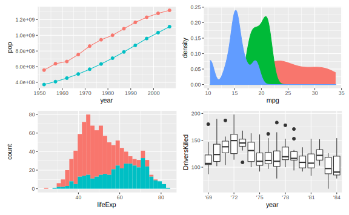
Figure 12.1: gglot2 default theme
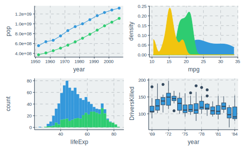

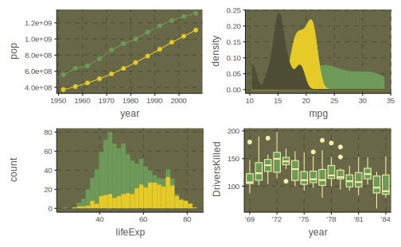
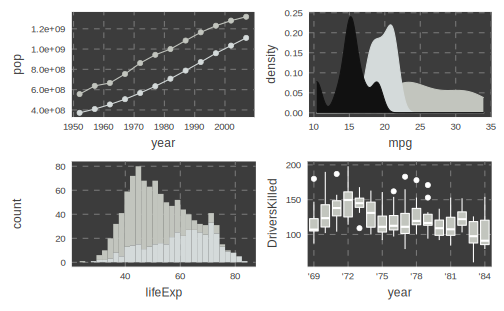
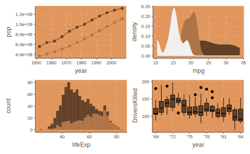
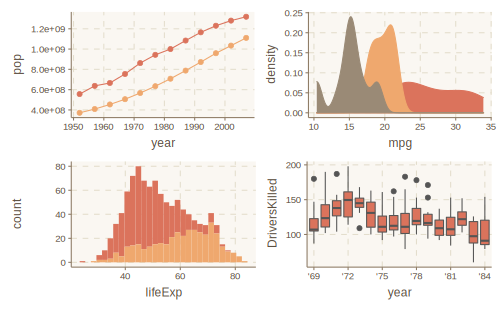
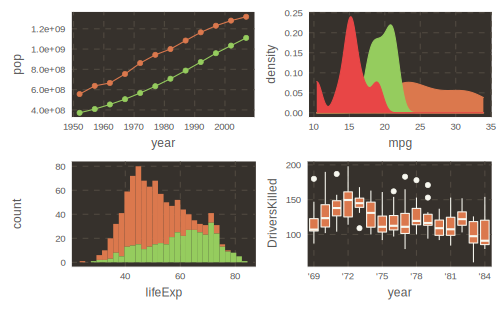
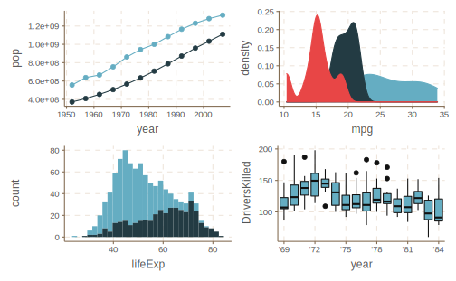
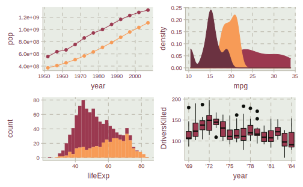
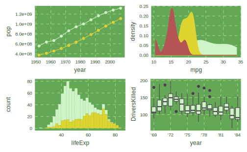
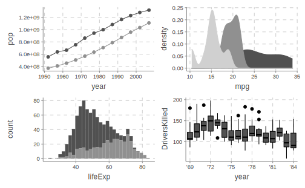
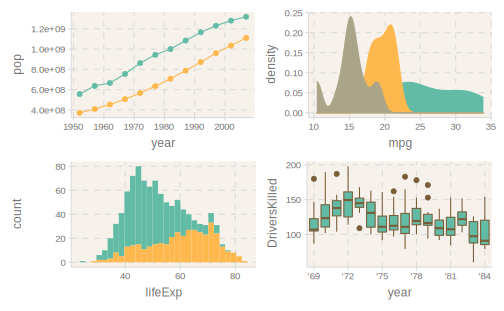
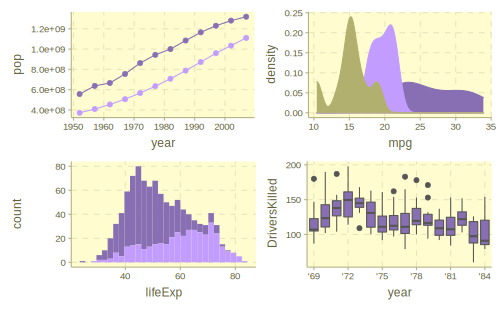
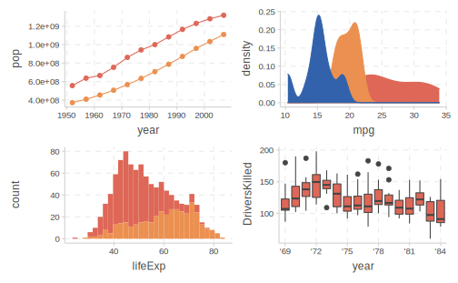
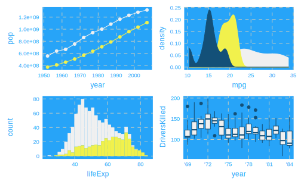
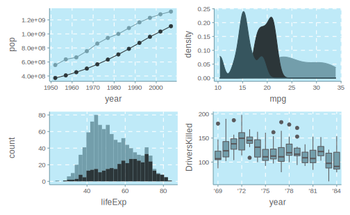
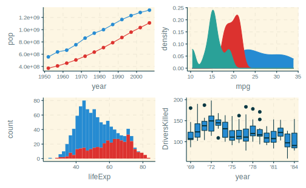
ggthemr() 还有一个参数 type = c("inner", "outer") 控制背景色只占据绘图区还是整个图表：
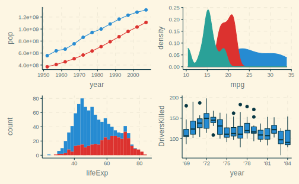
12.2 其他调用方式
如果不喜欢 ggthemr() 这种主题调用方式，还可以使用 + 这样的 ggplot2 叠加语法设置主题。
在 ggthemr() 中设置 set_theme = F，避免直接修改原默认值。此时函数返回一个列表:
fresh_theme <- ggthemr("fresh", set_theme = F)
names(fresh_theme)
#> [1] "theme" "geom_defaults" "scales" "palette"
#> [5] "layout" "text_size" "spacing" "type"这里主要使用 `theme 和scales` 两个元素
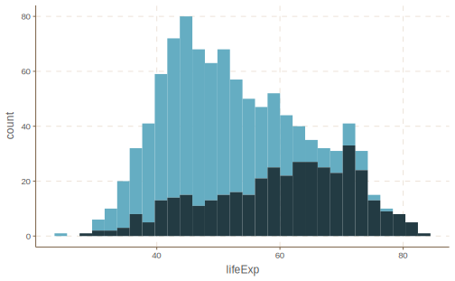